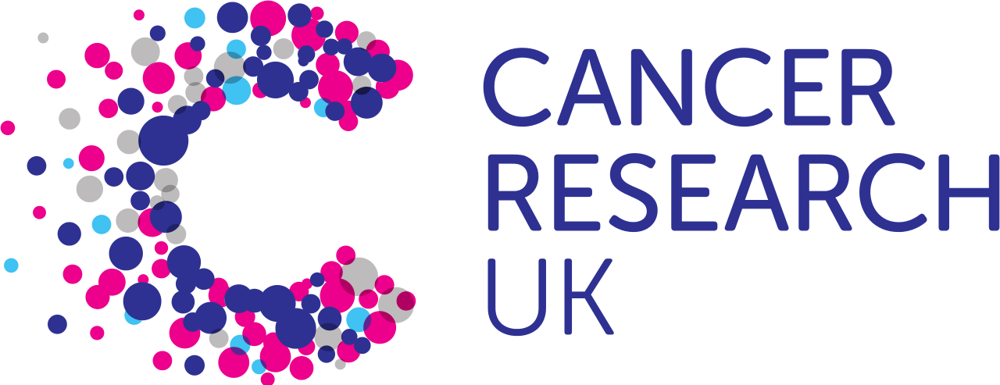
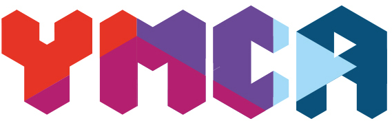

Lewis Goddard
Professional Experience
Production Technician / 1st Line Support
Technologies: Powershell, PHP, JavaScript, VBScript, SQL, Windows CE
Where: Banham, Attleborough
When: 2014 – Current
Accomplishments
- Automated software and security patching for hundreds of users, resulting in a 98% drop in secuirty warnings.
- Complimented and repaired existing systems, including taking half-a-million-pound daily-volume exit-scanning system from an average of 2-3 failures a day to none confirmed in the last 18 months, resulting in 12-man-hours saved every week.
- Worked with terabyte-scale database systems, more than halving the average transaction time.
- Custom-built various web-based software in support of personnel, including products for HR, Staff Sales, Emergency Contacts, and Support Ticketing for IT and Engineering.
- Configured multiple redundancy access systems for off-site access without expensive and time-consuming travel.
Social Data Analyst

Technologies: Python, Twitter API
Where: BBC, London
When: 2014
Successfully reported a Chilean earthquake in April 2014 to a London-based news center before local news began airing the warnings thanks to automated social analysis.
Data & Search Analyst
Technologies: Python, SQL, JavaScript
Where: CSA via GCHQ, Cheltenham
When: 2013
Accomplishments
- Built and maintained image-analysis engine capable of tracking temperature, speed, and direction over a series of time and location-aware photographs to identify a vehicle type.
- Mathematically designed the architecture for a search engine with over 60 Trillion entries, nearly double Googles indexed pages at the time. The system continues to run within it's performance parameters at nearly five-times that load.
- Worked as a liaison between no less than 6 intelligence agencies, including the now-notorious NSA, on making data searchable from several different sources and formats.
Support Technician
Technologies: Windows, Linux, Point-of-Sale Systems
Where: LocalFix, Bury St. Edmunds
When: 2010 – 2012
Conducted physical and digital repairs of various machines at both private residences and places of business, including Laptops, Desktops, Servers, Routers, Switches, and Point-of-Sale Systems.
Web Developer
Technologies: JavaScript, CSS, PHP, Python, SQL, Linux
Where: Freelance
When: 2010 – 2016
Built or maintained sites working in PHP and Python for a variety of private clients over several years, typically as a source of secondary income.
Altruistic Experience
Volunteer Web Developer and Community Moderator
Technologies: PHP, JavaScript, CSS, SQLite, WebTorrent, Linux
Where: elementary
When: 2012 – Current
Accomplishments
- Built elementary.io with automated testing and deployment.
- Served over 1.2 million downloads, a petabyte of data, from a custom CDN with timestamp protection and seed-servers. Files are served from 6 different locations on 3 different continents.
- Moderated the elementary OS StackExchange during beta, which has been the most visited active beta since it started.
Volunteer Systems Architect and Council Member
Technologies: PHP, Python, SQL, Linux
Where: eustasy
When: 2007 – Current
Accomplishments
- Moved a sinkhole community into a self-sustaining status.
- Open-Sourced more than 30 different software repositories and received hundreds of contributions from outside developers.
- Paid out over $5,000 in bug bounties.
- Re-built eustasy.org (premiering soon)
Regional Promoter

Where: Cancer Research UK, Norwich
Where: British Red Cross, Norwich
When: 2012
Delivered localised promotions for various charities to assist with fundraising events, drives, and campaigns.
Volunteer Donations Assistant

Where: The YMCA, Bury St. Edmunds
When: 2010 – 2011
Accomplishments
- Approached working in a new environment early.
- Kept the entire staff amused with 5 muddled scalectric sets.
- Bypassed an ADT 1000-series alarm while water is cascading down it more than a dozen times.
Interests
Architecture | Avionics | Biology | Chemisty | Economics | Engineering | Physics | Psychology | Sociology | Software | Space | Sustainability | Writing